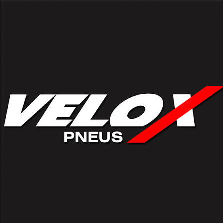
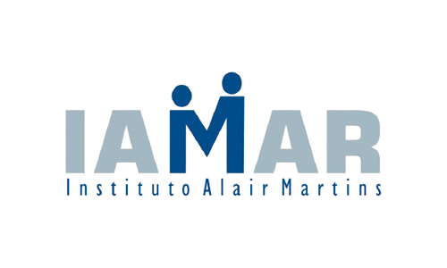

A Lazarus Assessoria e Projetos reúne mais de 30 anos de experiência profissional no desenvolvimento, planejamento e acompanhamento de projetos, consolidando conhecimento técnico e atuação em diferentes áreas e mecanismos de financiamento.
Sua atuação abrange todas as etapas do ciclo de um projeto, desde a elaboração e estruturação das propostas até a captação de recursos, gestão, execução e prestação de contas, por meio de leis de incentivo, editais nacionais e internacionais, emendas parlamentares e outros mecanismos de financiamento.
Com essa experiência, a Lazarus se apresenta ao mercado como uma estrutura empresarial preparada para atender organizações da sociedade civil, empresas, produtores culturais, artistas, municípios e instituições públicas e privadas, oferecendo soluções técnicas, orientação especializada e acompanhamento em todas as etapas, da concepção à conclusão dos projetos.
Desenvolvimento e estruturação de projetos para leis de incentivo, editais nacionais e internacionais e outros mecanismos de financiamento.
Orientação a empresas na seleção e no patrocínio de projetos, especialmente por meio de leis de incentivo fiscal, com acompanhamento do processo e da documentação necessária.
Acompanhamento técnico, administrativo e financeiro das etapas do projeto, conforme planejamento, orçamento, cronograma e exigências do mecanismo utilizado.
Organização, acompanhamento e elaboração da prestação de contas, com atenção aos documentos, prazos e normas específicas de cada projeto.
Assessoria na elaboração do plano de trabalho, acompanhamento da execução dos recursos e prestação de contas de projetos viabilizados por emendas parlamentares.
Criação de sites institucionais e páginas para empresas, organizações, projetos e iniciativas, desenvolvidos de acordo com as necessidades de cada cliente.
Ao longo dos anos, projetos assessorados pela Lazarus contaram com o apoio de empresas e instituições de diferentes segmentos, contribuindo para a realização de iniciativas culturais, sociais, esportivas e institucionais.




